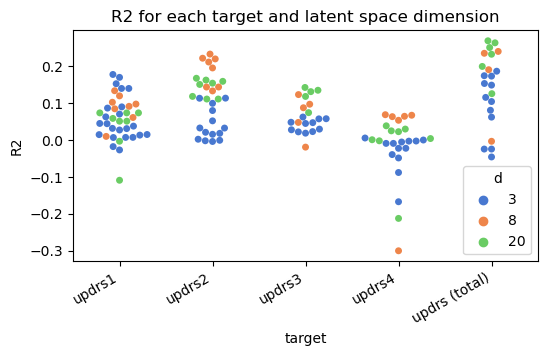
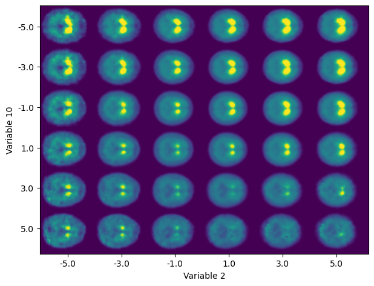

Bridging Imaging and Clinical Scores in Parkinson’s Progression Via Multimodal Self-Supervised Deep Learning
Francisco J. Martinez-Murcia ![]()
1. INTRODUCTION
Parkinson’s disease (PD) affects more than 6.2 million people worldwide. It is characterized by a loss of dopamine-producing neurons in the brain, causing tremors, rigidity, and cognitive decline among other symptoms. Ioflupane I-123 binds to the presynaptic dopamine transporters (DaTs), allowing to visualize and quantify DaT concentration at the striata, which is key to characterize PD in SPECT imaging. Early detection and monitoring of PD progression could be tackled by modelling a self-supervised, low-dimensional representation of a FPCIT dataset, which enables us to longitudinally compare images and identify patterns of change that are indicative of neurodegeneration.
2. METHODOLOGY
This work proposes a novel approach to detect and quantify subtle changes in DaT concentration and distribution in the brain using 3D convolutional variational AEs (CVAEs). The composite variables of the latent space are then modelled using Decission Trees and XGBoost regression, and the spaces are interpreted through visualization and SHAP.
2.1 DATASET
Data used for this work was obtained from the Parkinson’s Progression Markers Initiative. Specific cohort from the PPMI database that follows individuals diagnosed with PD and Healthy Control subjects (HC) during 5 years, recording symptomatology via the MDS-UPDRS scale. All the Ioflupane I-123 SPECT scans have been intensity normalized to non-specific areas and a sigmoid function was applied to compress the high-intensity values.
2.2 3D CONVOLUTIONAL VAE

2.3. EVALUATION
- Use the μ parameters of the latent distribution Nd(μd,σd) as features.
- K-Means features (KMF) are generated to capture important data characteristics.
- Regression using Decision Trees (DT) and XGBoost.
- Performance metrics such as Mean Absolute Error (MAE), Root Mean Squared Error (RMSE), and coefficient of determination R2 are computed using 10-fold cross-validation.
- SHapley Additive exPlanations (SHAP) is applied to the outputs of each system.
3. RESULTS

- R2>0 for almost all target UPDRS categories and d-dimensional latent spaces.
- Low latent dimensionality (3, 8) is generally for individual perceived symptomatology (UPDRS 1, 2 and 4).
- UPDRS - total is better accounted for by the 20-D model (MAE = 12.21, R2=0.26), pointing at higher complexity of the composite and stronger relationship with FPCIT patterns.
- UPDRS 3, more dependent on measured motor symptoms, benefits from the 20-D space.

For top performing 20-D XGB model of UPDRS (total), SHAP reveals:
- top-3 features that contribute to the output of the algorithm are latent variables 2, 10 and 0.
- Approx. linear dependency between importance to the algorithm output and values of the latent variables.
- Composition of variables 2 and 10 accounts for relevant characteristics of Ioflupane SPECT imaging: the general intensity of the striata, the separation between them and the uptake ratio between its anterior and posterior parts.
- Anterior-posterior uptake ratio more related to progression in the first symptoms. Average intensity for the automatic diagnosis of PD.
5. CONCLUSIONS
- The latent features of trained CVAEs are related to different aspects of the MDS-UPDRS scale with R2>0.20.
- Best performance for UPDRS (total) with latent variables 2 and 10.
- Anterior/Posterior ratio are more related to progression of the first symptoms. Average striatal intensity for the diagnosis of PD.
This work paves the way for exploratory analysis of links between neuroimaging patterns and neurological disorders in an hypothesis-free environment.